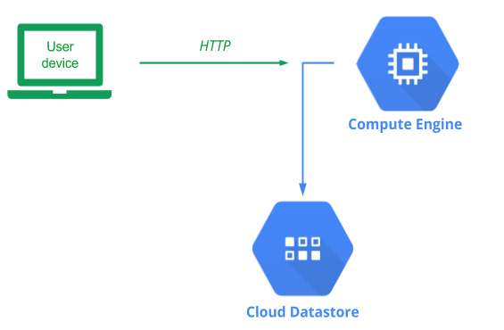
Cloud Datastore is a serverless NoSQL database that is managed completely by Google Cloud. Such a service obviates the need for application developers to manage and maintain a backend database server of their own.
Recall our Guestbook application and its MVP architecture. By defining an abstract base class for the backend Model, our implementation allows us to replace one model implementation with another without changing our application code. To begin with, in your local Ubuntu VM checkout the course repository and change into the code directory.
git clone https://github.com/wu4f/cs430-src cd cs430-src/05_gcp_datastore
In examining the code, notice that it is largely the same as our prior code with the only differences being that the initializer for the gbmodel class (__init__.py) now supports a new model backend to support Datastore.
gbmodel/__init__.py
# __init__.py
model_backend = 'datastore'
if model_backend == 'sqlite3':
from .model_sqlite3 import model
elif model_backend == 'pylist':
from .model_pylist import model
elif model_backend == 'datastore':
from .model_datastore import modelFinally, the code implementing the Datastore backend database model has been added (model_datastore.py)
Our code for model_datastore implements the model's constructor as well as the select and insert calls. The constructor, shown below, creates a client for querying the backend Datastore service.
gbmodel/model_datastore.py
from datetime import datetime
from google.cloud import datastore
class model(Model):
def __init__(self):
self.client = datastore.Client('YOUR_PROJECT_ID')Note that it requires you to identify your project so that it can route the requests to the appropriate database.
Important
The Project ID can be obtained via the dashboard of your project in the web console as shown below:
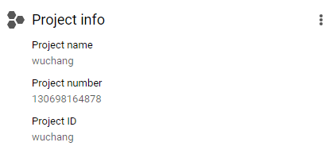
It can also be obtained within Cloud Shell within its environment variables via:
echo $GOOGLE_CLOUD_PROJECTWithin model_datastore, the select method is implemented by creating a query. The Datastore backend is organized by kinds where each kind is equivalent to a table in SQL databases. For our Guestbook application, we'll use Review for the kind. In instantiating our query, we specify this in its constructor. We want select() to return all of the guestbook entries. As a result, we call query.fetch() which retrieves all of the entries from Datastore.
gbmodel/model_datastore.py
def select(self):
query = self.client.query(kind = 'Review')
entities = list(map(from_datastore,query.fetch()))
return entitiesNote that we can not just return the results of this call from select() since the model is expecting us to return a list of lists. The fetch() call returns the data in a list of Entity dictionary objects. To convert this into the desired list of lists format, we create a function called from_datastore that pulls out the appropriate fields from the Entity and returns them in the desired list format. With this implemented, we then map the function across all entities returned by query.fetch() as shown previously.
gbmodel/model_datastore.py
def from_datastore(entity):
"""Translates Datastore results into the format expected by the
application.
Datastore typically returns:
[Entity{key: (kind, id), prop: val, ...}]
This returns:
[ name, email, date, message ]
where name, email, and message are Python strings
and where date is a Python datetime
"""
if not entity:
return None
if isinstance(entity, list):
entity = entity.pop()
return [entity['name'],entity['email'],entity['date'],entity['message']]The insert method first creates a new key that specifies Review as the kind in Datastore it will be stored in and then creates a new Entity using the key. It then takes the 3 fields that are sent to it as input: the name and e-mail address of the signer as well as the message left. It then creates an Entity object and updates it with the input fields while adding a fourth field to store the date that the message was left via a call to datetime.today(). It then calls put() to add the item to Datastore.
gbmodel/model_datastore.py
def insert(self,name,email,message):
key = self.client.key('Review')
rev = datastore.Entity(key)
rev.update( {
'name': name,
'email' : email,
'date' : datetime.today(),
'message' : message
})
self.client.put(rev)
return TrueWe will need to configure Datastore within our cloud project before we can use it. Within your class project, visit Datastore dashboard from web console to set up service.
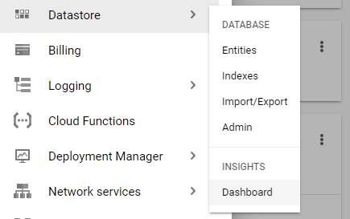
Our model runs within Cloud Firestore in its "Datastore Mode". Ensure that this mode is set instead of native mode, since this is a permanent setting for the project. Use a us-west region for the database.
Hybrid cloud deployments will have some infrastructure running on-premise and some hosted in the cloud provider. In this version, we'll start with running the web application on your Ubuntu VM and connect it up to the Datastore model backend that is hosted on your GCP account. Visit the source directory of the application.
cd cs430-src/05_gcp_datastore
View the requirements.txt file. The main packages we need will be flask and GCP's Python package for accessing Datastore. The gunicorn package is also to support a subsequent version that runs within a Docker container.
requirements.txt
# Web framework
flask
# GCP Cloud Datastore library
google-cloud-datastore
# Python WSGI HTTP server (connects web servers such as nginx to app)
gunicornSet up the virtual environment and install the requirements:
python3 -m venv env source env/bin/activate pip install -r requirements.txt
In order to ensure that only authenticated access is allowed onto our Datastore backend, GCP requires us to provide credentials to an authorized account. To set this up, we will create a service account for the Guestbook application and then add a role to it that authorizes the account to make changes to our Datastore backend. Using this account, we will later generate a credential file that will then be used at run-time to authenticate our web application to the Datastore service. All of this is managed via GCP's Identity and Access Management service (IAM).
Option #1: Web console
Visit the console, go to IAM, and click on "Service accounts"

Then, create a new service account:
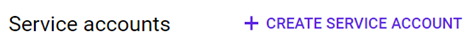
Specify name of account (guestbook) and navigate the account creation interface to assign the account the Datastore User role that will grant it read/write access to the project's Cloud Datastore databases.
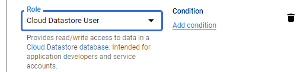
Go back to the Service account console, click on the "Actions" dropdown for the guestbook service account and navigate to its key management interface.
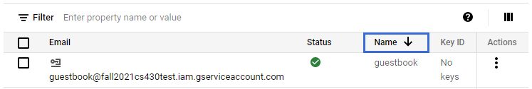
We require a key as we're hosting our application locally, but accessing resources on Google Cloud. Add a key with a JSON key type that can be used to authenticate our web application to the backend Datastore service.
The key will automatically be downloaded by your browser. Typically, this will be located in a directory called "Downloads" in your home directory. Rename the file to /tmp/guestbook-key.json on the VM.
mv ~/Downloads/<NAME_OF_KEY_FILE>.json /tmp/guestbook-key.json
Then, point the environment variable GOOGLE_APPLICATION_CREDENTIALS to it:
export GOOGLE_APPLICATION_CREDENTIALS=/tmp/guestbook-key.json
Option #2: Cloud Shell
To perform the operations in Cloud Shell, create the service account using the gcloud command.
gcloud iam service-accounts create guestbookWe must now add the Cloud Datastore User role to the service account. To do so, we add a policy specifying this. Note that the command below assumes that your Cloud Shell session is bound to your current Google Cloud Project identifier.
gcloud projects add-iam-policy-binding ${GOOGLE_CLOUD_PROJECT} \
--member serviceAccount:guestbook@${GOOGLE_CLOUD_PROJECT}.iam.gserviceaccount.com \
--role roles/datastore.userThen, we create a service account key in JSON format that provides access to the service account and its permissions.
gcloud iam service-accounts keys create guestbook-key.json \
--iam-account=guestbook@${GOOGLE_CLOUD_PROJECT}.iam.gserviceaccount.comCopy and paste the contents of the JSON file into a new local file on your Ubuntu VM named /tmp/guestbook-key.json. Then, point the environment variable GOOGLE_APPLICATION_CREDENTIALS to the file:
export GOOGLE_APPLICATION_CREDENTIALS=/tmp/guestbook-key.json
After configuring your credentials and region, run the application:
python app.py
The application comes up on Flask's default port. Click on the URL given to launch a browser to load the application or visit http://localhost:5000 to view the application running. Sign the guestbook with your name and PSU e-mail address with the message "Hello Datastore".
- Take a screenshot of the output for your lab notebook.
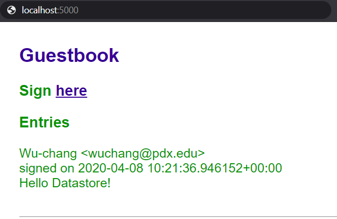
Type "Ctrl+c" to exit the application.
Then, from the web console for your cloud project, navigate to the Datastore service to find that this entity has been added to your "Review" kind as shown below. 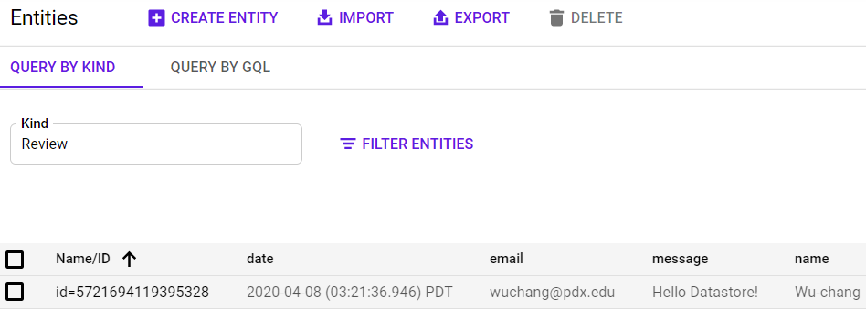
Go back to your Ubuntu VM and type "Ctrl+c" to exit out of the application.
Locally running our code is great if we're the only ones who need to run it and if the numbers of users we have are limited. Eventually, when this application takes over the world, we will want to run it everywhere and have the ability to scale it up to run on hundreds of servers. Containers help us address both of these issues. They package up our application's environment so that it can be shipped anywhere and they can be replicated across a multitude of servers as long as any persistent state is stored outside of the container (in this case, our Datastore backend).
Examine the Dockerfile we will be using to containerize our application and change the maintainer to yourself. As the file shows, we'll use the latest Google Cloud SDK container as our base layer google/cloud-sdk. While this container image is large, it has the advantage that many of the packages we need are included and do not need to be compiled in order for us to create our container (such as grpcio). The container image is set to execute gunicorn upon startup to launch our application. Note that the command line parameters used for executing gunicorn include a flag --bind that will either pull the port for gunicorn to listen on from the environment variable PORT passed into the container. In addition the app:app argument specifies that gunicorn will go to app.py and launch the app object within it to start the server.
Dockerfile
# Use Google Cloud SDK's container as the base image
FROM google/cloud-sdk
# Specify your e-mail address as the maintainer of the container image
LABEL maintainer="yourname@pdx.edu"
# Copy the contents of the current directory into the container directory /app
COPY . /app
# Set the working directory of the container to /app
WORKDIR /app
# Install the Python packages specified by requirements.txt into the container
RUN apt update -y && apt install -y python3-pip && pip3 install -r requirements.txt
# Set the parameters to the program
CMD exec gunicorn --bind :$PORT --workers 1 --threads 8 app:appThe contents of the entire directory in which we are building our Docker container is copied via the COPY . /app command. Unfortunately, this directory contains our local Python environment and dynamically compiled Python code from our previous version. We do not want to include these directories in our container image. Much like .gitignore can be used to ignore files in git, a .dockerignore file does the same for docker as shown below:
.dockerignore
env
__pycache__Build the container with the following command. If you get a permission error, you will need to add your username to the docker group via usermod or run the command using sudo.
docker build -t gcp_gb .
We will now run a containerized version of the application. The container requires the GCP environment variable GOOGLE_APPLICATION_CREDENTIALS to be set to the location in the file system that holds the credentials for the guestbook service account we created earlier so that our application can authenticate itself to our Datastore backend.
Unfortunately, while the credential exists on our Ubuntu VM, the container itself has its own file system and won't be able to access our credential on it. We could get around this by copying the JSON credential into the container image itself, but this is not recommended for security reasons since anyone that is able to access the container image will now be able to access our credentials and tamper with our Datastore backend.
To get around this, docker can be set-up to allow a container to mount a particular file on our Ubuntu VM using the -v flag. The example below takes the location of the credential on the Ubuntu VM (/tmp/guestbook-key.json) and mounts it in the container at the location /tmp/guestbook-key-on-container.json as a read-only (ro) file.
-v /tmp/guestbook-key.json:/tmp/guestbook-key-on-container.json:ro
We now need to point the container's GOOGLE_APPLICATION_CREDENTIALS environment variable to this location in order for our application to access them. This is done via the --env flag.
--env GOOGLE_APPLICATION_CREDENTIALS=/tmp/guestbook-key-on-container.json
We want to set the container's PORT environment variable so that the gunicorn command can bring up our application on it. We must also specify the local port on the Ubuntu VM that will be mapped to the container's port. To do so, the --env flag is used to specify that the container will listen on port 8000 and the -p flag then maps the Ubuntu VM's port 8000 to the container's port 8000.
-p 8000:8000 --env PORT=8000
Finally, we'd like to have the container automatically be removed when it has been terminated.
--rm
With these flag settings, start the container:
docker run <ARGS_FROM_ABOVE> gcp_gb
After running this command, you should see the container output showing the server running:
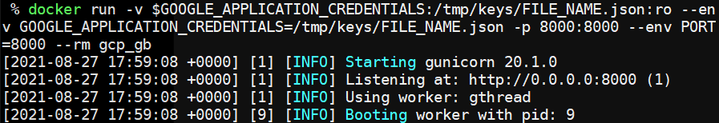
Bring up a browser on your Ubuntu VM and visit the application via http://localhost:8000. Sign the guestbook with your name and PSU e-mail address with the message "Hello Docker Datastore!"
- Take a screenshot of the output for your lab notebook.
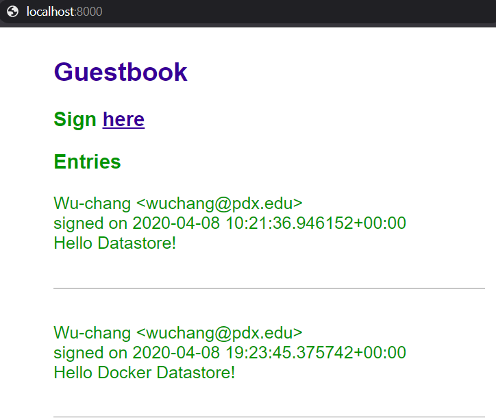
Type "Ctrl+c" to exit the container.
Go back to the Datastore console and see that a second item has been added to the table.
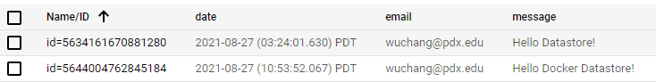
Examine the container image you've built to see its size.
docker images
Currently, the container image has a local tag gcp_gb. We wish to distribute our container image widely so that it can be run anywhere and everywhere. To do so, we'll repeat the steps from before to tag and push our image to DockerHub. First, login to your DockerHub account from the Ubuntu VM.
docker login
Then, tag the image with your Docker ID.
docker tag gcp_gb <dockerhub_id>/gcp_gb
Finally, push the image to Docker Hub.
docker push <dockerhub_id>/gcp_gb
- Take a screenshot of the container image on DockerHub.
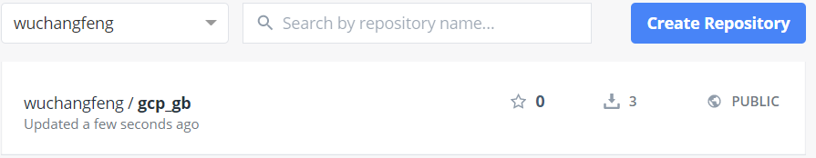
Cloud Shell is an IDE (integrated development environment) that streamlines the production of cloud applications. To make things easier on the developer, it is configured with the permissions afforded to the user who has launched the shell, which is typically a lot more than what is needed. As a result, while we can test our application within Cloud Shell, it is not intended for production use. Using Cloud Shell we will now run a version of our Guestbook. In Cloud Shell, begin by cloning the repository and change into the source directory.
git clone https://github.com/wu4f/cs430-src cd cs430-src/05_gcp_datastore
Then, in the upper-right, click on the icon to "Open in new window" to launch a full version of the shell in a browser window.
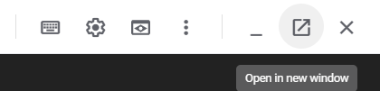
Then, click on the pencil icon to open the editor so you can both edit files and run commands within the same browser window.
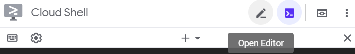
Use the editor to change model_datastore.py to point the Datastore client to your own project. Save the file.
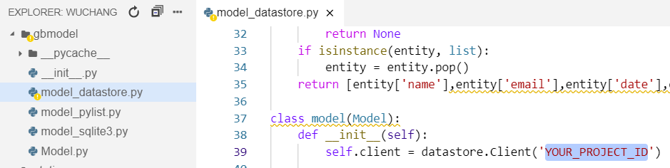
Go back into the terminal where the application resides and create an environment for it. Install the packages it requires. (Note: you must use virtualenv to set up the environment, not the built-in venv of Python 3)
virtualenv -p python3 env source env/bin/activate pip install -r requirements.txt
Then, run the application
python app.py
Visit the Guesbook by going to the "Web Preview" icon in the upper-right and previewing the service that is running on port 5000. Note that, if the request hangs, it is because you may need to authorize project access. Switch back to the Cloud Shell window to do so.
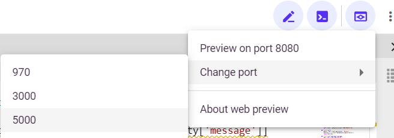
Add a guestbook entry that uses your name and PSU email with a message "Hello Cloud Shell!".
- Take a screenshot as before that shows your entry and the URL bar.
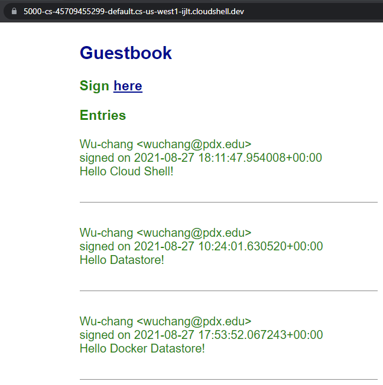
The entry has been added to the Datastore backend. Visit Datastore in the console and see that the guestbook entry added.
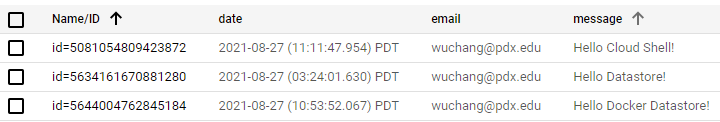
Go back to the Cloud Shell terminal and type "Ctrl+c" to exit the application.
Cloud Shell automatically assigns the permissions of the owner account onto the application being run when authorized. While this makes things convenient for developing, one would typically not use such a setup to deploy production services. A more realistic scenario would be to deploy the application to a Compute Engine instance with just the permissions it needs to run the application.
In this lab, you will deploy onto a Compute Engine instance using a role with a limited set of permissions. There are two ways this can be done. One would be to use the guestbook service account we set up earlier with the Cloud Datastore User role attached to it and the other would be to use the default service account for Compute Engine and add the Cloud Datastore User role to it. We'll use the former approach for this instance.
Option #1: Web console
Visit the Compute Engine console and begin configuring a new instance called guestbook in us-west1-b using a recent Ubuntu LTS version as a boot disk.
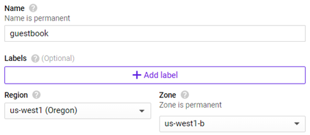
Instead of using the Compute Engine default user account, change the service account associated with the instance to the guestbook account instead:
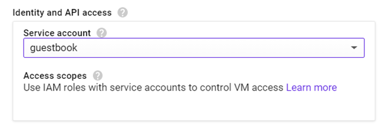
Then, Allow HTTP traffic to the instance:
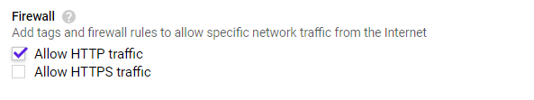
Create the instance.
Option #2: Cloud Shell
One can also create this instance by performing the following command in Cloud Shell.
gcloud compute instances create guestbook \
--machine-type e2-medium --zone us-west1-b \
--image-project ubuntu-os-cloud --image-family ubuntu-2204-lts \
--scopes cloud-platform \
--tags=http-server \
--service-account guestbook@${GOOGLE_CLOUD_PROJECT}.iam.gserviceaccount.comGo back to the Compute Engine console and wait for the VM to come up. Then ssh into the instance.
Since we've gone through the trouble of publishing our application as a Docker container on DockerHub for all the world to run, we can start our web domination by running it on our Compute Engine instance. To begin with, within the VM, install Docker.
sudo apt update -y sudo apt install docker.io -y
Then, we simply run the container using its DockerHub identifier. Because docker is a privileged command and we are running on a privileged port (80), we must run the command via sudo. Note that, unlike our prior version, GCP credentials do not have to be supplied since requests to Datastore from this Compute Engine instance will automatically assume the role of the service account we have attached to the instance earlier.
sudo docker run -p 80:80 --env PORT=80 <dockerhub_id>/gcp_gb
Visit the site using the instance's IP address via
http://<IP_address_of_ComputeEngine_instance>
You may also go back into the Compute Engine console and click on the IP address directly. Add a guestbook entry that uses your name and PSU email with a message "Hello Compute Engine!".
- Take a screenshot as before that shows your entry and the IP address in the URL bar.
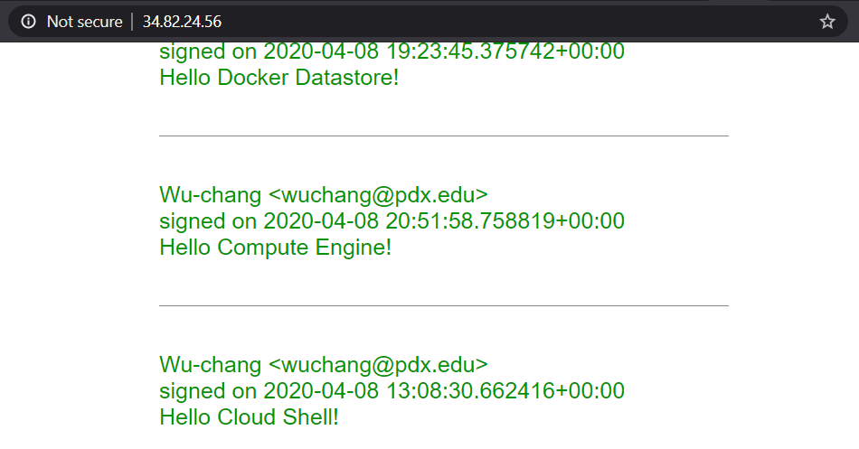
Go back to Cloud Datastore and view the Guestbook data.
- Take a screenshot of all of the entries that have been added including their timestamps for your lab notebook.
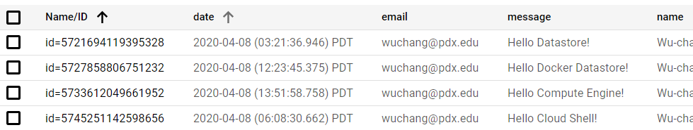
Go back to the VM and type "Ctrl+c" to exit the container, then exit out of the VM.
Visit Compute Engine and delete the guestbook VM instance. Alternatively, you can delete it via
gcloud compute instances delete guestbook --zone=us-west1-b